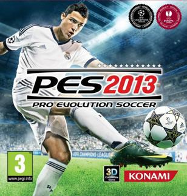

Pro Evolution Soccer 2013
Sports · Football · ZIP Package · The Afnan Yaz Productions / third-party listing

A third-party football game distributed here as a ZIP package. Download the archive and follow the separate extraction and installation guide.
About this game
Pro Evolution Soccer 2013 (PES 2013) is a third-party football game. Its title, game software, branding and related intellectual property belong to their respective rights holders. FOZAYX Games does not claim that PES 2013 is an original FOZAYX creation or an official release. The supplied Google Drive file is identified as PES-2013.zip.
The supplied archive is named PES-2013.zip. A ZIP archive is not installed directly like a normal APK. Extract it first, then install the APK contained in the extracted game folder and point the game to that same folder when requested.
How to download, extract and start PES 2013
- Download the ZIP file. Use the download option at the bottom of this page and wait until PES-2013.zip has fully downloaded.
- Open ZArchiver. Find the downloaded ZIP file in your Downloads folder (or the folder where your browser saved it).
- Extract the archive. Tap PES-2013.zip, choose Extract here or select a destination folder, and wait for extraction to finish.
- Open the extracted game folder. Use your file manager or ZArchiver to enter the folder created by extraction.
- Install the APK. Find the APK inside that extracted folder, tap it and complete Android's installation prompts. Only continue if you trust the source and the file.
- Launch the game. Open PES 2013 from your app drawer. When the game asks for its data folder, choose the folder you extracted in the earlier step—not the ZIP file itself.
- Wait for the Ronaldo screen. When the screen showing Ronaldo and the message “Press any button to start” appears, tap the Pause button at the upper-left side as described for this supplied build.
- Start playing. After the game proceeds from that screen, continue to the game and play.
If the game does not show the folder picker, the folder is not accepted, or the Pause-button behavior differs on your device, the build may have a different setup requirement. Check the included files and source before changing or deleting anything.
Ownership and compatibility notice
PES 2013 is a third-party title. Its software, trademarks, cover art and other intellectual property belong to their respective rights holders. This listing does not imply official affiliation, endorsement or permission to redistribute. Make sure the file is lawfully shared before downloading. Android compatibility can vary by device and build.
Download Pro Evolution Soccer 2013
Download the complete ZIP archive first. Do not try to install the ZIP file directly.
DOWNLOAD PES 2013 ZIP ↗File: PES-2013.zip · Google Drive